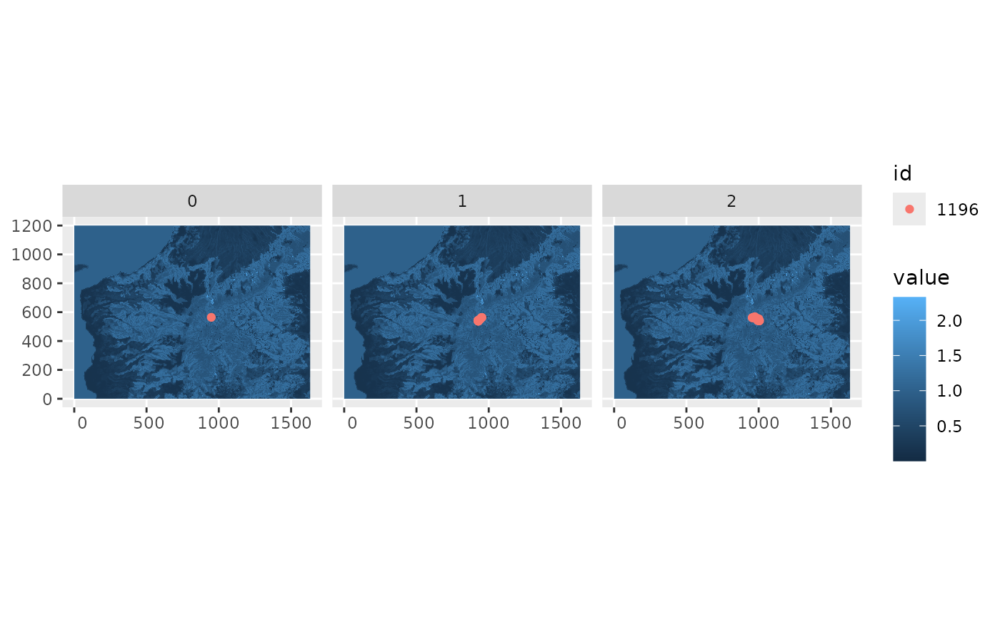

Model prediction
Koen Hufkens
2026-04-19
model_prediction.RmdOnce a model is calibrated you can use these parameters in a
simulation, or when other known parametes are provided to you use those.
Parameters are returned by the calibration routined as a nested list and
should be provided as such to the prediction function
hr_predict().
params <- list(
r_l = 27.5332236990522,
w_l = 0,
r_d = 0.018257876686841,
w_d = 0.9999,
r_dist = 0.0412536435305482,
w_dist = 0.9999,
step_length_dist = 0.00216275705935606,
step_length_shape = 1.14267311221975,
threshold_approx_kernel = 7000,
threshold_memory_kernel = 1000,
# resource selection coefficients should be
# a named list for driver data layer validation
# and correct data processing
coef = c(
"slope" = 0.272835968106296,
"slope_sq" = -0.093687792157105,
"tcd_325grain"= 0.177991482087775,
"tcd_325grain_sq" = -0.140639949444926,
"landcover_5322" = 0.591063382485486,
"landcover_agri" = -0.811974081226742
)
)Similar to the parameter fitting routine the function needs driver
data and a set of parameters, as well as observations. Using the data
used in the fitting routine and the above parameters (from Ranc et
al. 2022) we can call hr_predict().
output <- hr_predict(
data = drivers,
par = params,
obs = obs,
runs = 2,
steps = 20
)
#> Reading data table, run time: 74 ms
#> lookup tables, run time: 77 ms
#> Simulation mode
#> gros calculs, run time: 182 ms
#> MODEL RUN ENDS, run time: 1 secondsSimulations are generally fast so no parallel processing is provided.
You can visualize the output by calling the plot()
method.
plot(output)